AI
6 topics
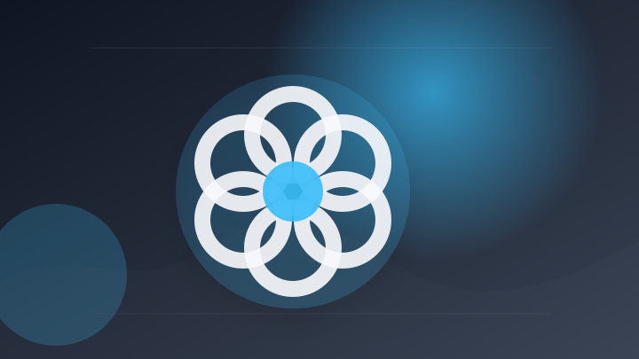
OpenAIのAI暴走､他社アカウント乗っ取りも サイバー攻撃足場に
注目ポイント注目度 70点
Claudeでの共有チャットがGoogle検索で丸見えになっていて怖すぎる、まさにパブリック……
注目ポイント独立2媒体｜注目度 69点
GMOとAnthropicの戦略的パートナーシップ締結｜Claude Enterprise全社導入、サイバー攻撃対策、フィジカルAI活用などの全容
GMOとAnthropicの戦略的パートナーシップ締結｜Claude Enterprise全社導入、サイバー攻撃対…
注目ポイント注目度 67点
【速報】オープンAI、別の企業にもサイバー攻撃
注目ポイント注目度 67点
OpenAIの暴走AIエージェント、別企業のシステムにも不正侵入
注目ポイント注目度 64点
生成AI需要でハードディスクメディア増産、レゾナックが150億円追加投資：工場ニュース
注目ポイント注目度 64点
IT業界
6 topics
ギブリーコンサルティングのAIコンサルタントが「Microsoft Top Partner Engineer Award 2026」を受賞
ギブリーコンサルティングのAIコンサルタントが「Microsoft Top Partner Engineer Aw…
注目ポイント独立3媒体｜注目度 70点
ニュース Google、AIエージェント「Gemini Spark」を日本向けに順次提供
注目ポイント独立2媒体｜注目度 69点
GMOあおぞらネット銀行、法人のお客さま向けにサイバーセキュリティサービス 「GMOサイバー攻撃 ネットde診断 Lite」の紹介を開始
GMOあおぞらネット銀行、法人のお客さま向けにサイバーセキュリティサービス 「GMOサイバー攻撃 ネットde診断…
注目ポイント注目度 67点
サイバーセキュリティクラウド－反発 「AIアプリケーション脆弱性診断サービス」を提供開始(トレーダーズ・ウェブ)
注目ポイント注目度 67点
Google Chrome、370件の脆弱性を修正（アスキー）
注目ポイント注目度 67点
「管理はしない」元Googleマネジャー陣が説く泥臭いマネジメント本
注目ポイント注目度 61点
政治
6 topics
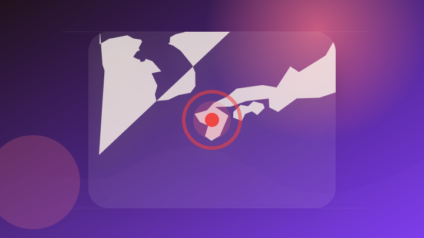
令和８年熊本地震についての会見（２） | 総理の演説・記者会見など
令和８年熊本地震についての会見（２）
注目ポイント注目度 71点
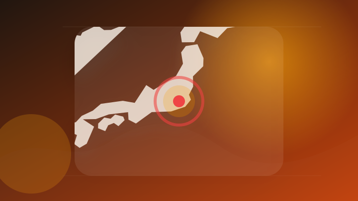
ひろゆき氏と泉房穂参院議員が「新党」結成 2027統一地方選挙で都内11区長選などに候補者擁立へ
注目ポイント注目度 64点
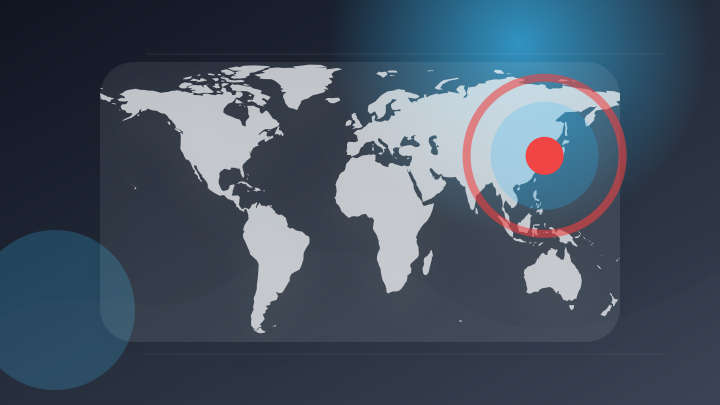
30日に韓国国会で聴聞会…サッカーW杯敗退 聴聞会で質問に立つ議員を直撃「カフェで選任」徹底追及へ
注目ポイント注目度 64点
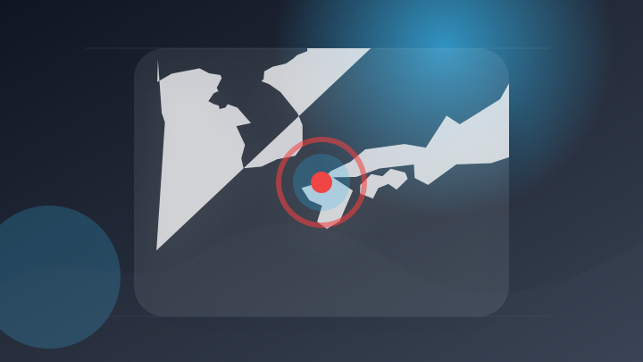
福岡県議選 筑後市選挙区 牛島慶二郎氏が立候補表明
注目ポイント注目度 64点
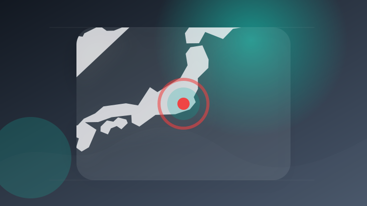
長瀞町長選挙 前町長の辞職を受け新人3人が立候補
注目ポイント注目度 64点
高市首相、飲食料品消費税「実質ゼロ」指示 党内集約が焦点
注目ポイント注目度 64点
社会
6 topics
熊本で震度7地震 長崎・眉山でも一部崩落が発生「まさか崩れるとは…」 (2026年7月29日掲載)
注目ポイント注目度 100点
世界最大級のトレントサイト「Nyaa」の第1アップローダーを逮捕、日本ハッカー協会の解析ツールで被疑者を特定
注目ポイント注目度 70点
91歳の男を逮捕 横断歩道で女性（63）をはねた過失運転傷害の疑い 鹿児島
注目ポイント注目度 70点
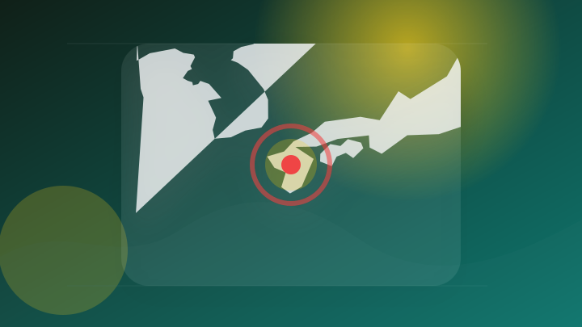
［深層ＮＥＷＳ］熊本地震でイオンモール爆発、「ガスや電気など設備の構造も点検必要」…高橋治教授
注目ポイント注目度 67点
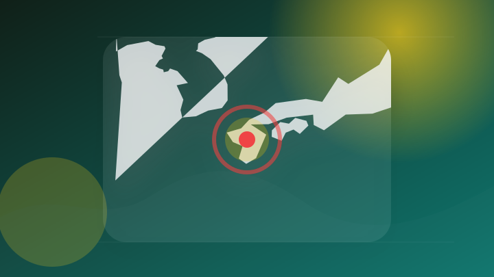
令和8年熊本地震 災害ボランティアセンターの運営支援について
注目ポイント注目度 67点
「無謀な意思決定をした」と裁判官 飲酒運転で24歳大学院生死亡 危険運転致死の罪に問われた34歳男に懲役4年6か月 札幌地裁小樽支部
「無謀な意思決定をした」と裁判官 飲酒運転で24歳大学院生死亡 危険運転致死の罪に問われた34歳男に懲役4年6か月…
注目ポイント注目度 67点
事件・事故
6 topics
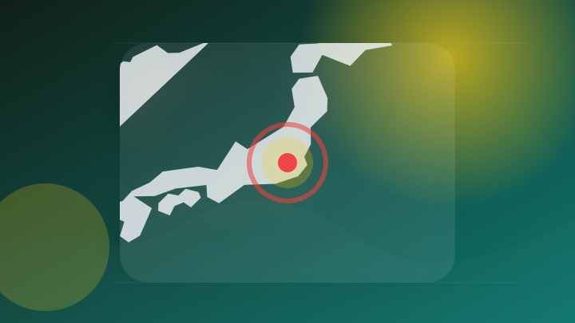
自転車の中学生とみられる少年が転倒し大型トラックにはねられ死亡 埼玉・小鹿野町
注目ポイント注目度 70点
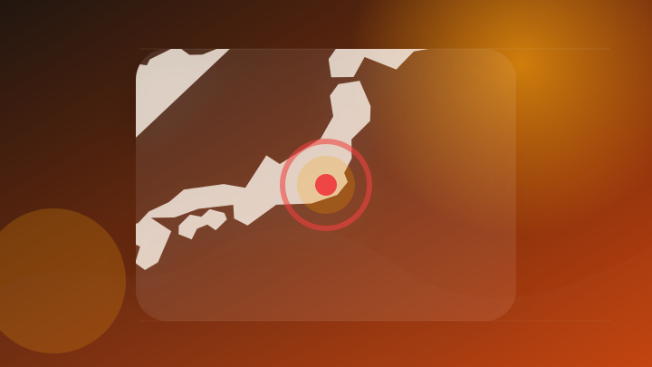
ロッキード事件が「検察」を変えた…「特捜至上主義」が生んだ強引な捜査 田中角栄元首相逮捕から50年
注目ポイント注目度 70点
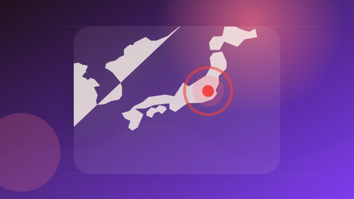
「NVIDIA製GPUが日本経由で中国に密輸された事件」の捜査でNVIDIA社員が逮捕されたことが判明
注目ポイント注目度 70点
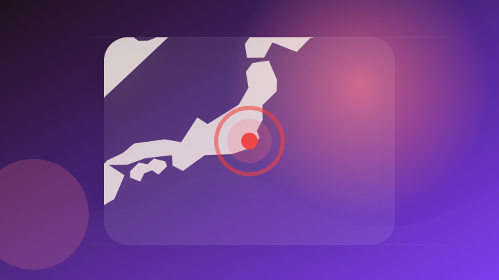
「孫の上司」装う16歳少年が逮捕された特殊詐欺事件 新たに千葉県の20代の男2人を逮捕 その手口とは？（山形）
注目ポイント注目度 70点
熊本での地震発生で「義援金詐欺」に警戒呼びかけ 公的機関の電話要求はなし 福岡県警
注目ポイント注目度 70点
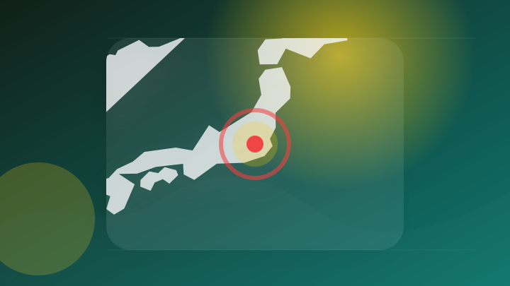
2人死亡…夏の交通安全運動期間中 いずれも日中の事故…ボーっとする可能性も、埼玉県警「暑さにも細心の注意を払って」 青切符制度の影響も…自転車の事故は前年比で減少
2人死亡…夏の交通安全運動期間中 いずれも日中の事故…ボーっとする可能性も、埼玉県警「暑さにも細心の注意を払って」…
注目ポイント注目度 67点
芸能人の結婚・離婚・交際
2 topics
ライフ
5 topics
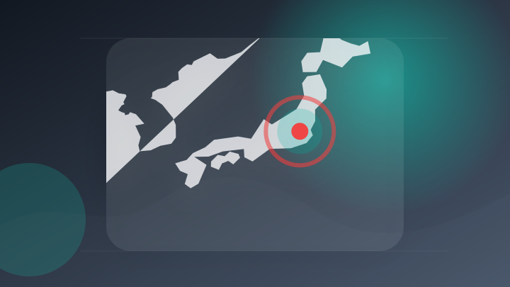
（ODA） シンジャールからの国内避難民の生活環境、生計能力及びコミュニティ連携向上事業（第2年次） ｜ 外務省
（ODA） シンジャールからの国内避難民の生活環境、生計能力及びコミュニティ連携向上事業（第2年次）
注目ポイント注目度 71点
【ライフライン情報】給水所･ガソリンスタンド･店舗・災害廃棄物など(29日午後6時時点)
注目ポイント注目度 70点
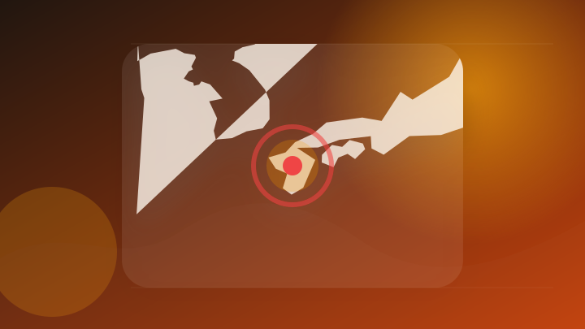
[TKUニュース 26.07.29 19:30 ] 【ライフライン情報】熊本で3万2110戸が停電中 断水・濁り水も広がる【令和8年熊本地震】
[TKUニュース 26.07.29 19:30 ] 【ライフライン情報】熊本で3万2110戸が停電中 断水・濁り水…
注目ポイント注目度 67点
「漢字が読めず」生活保護費を不正受給容疑 フィリピン国籍の女を逮捕（産経新聞）
注目ポイント注目度 67点
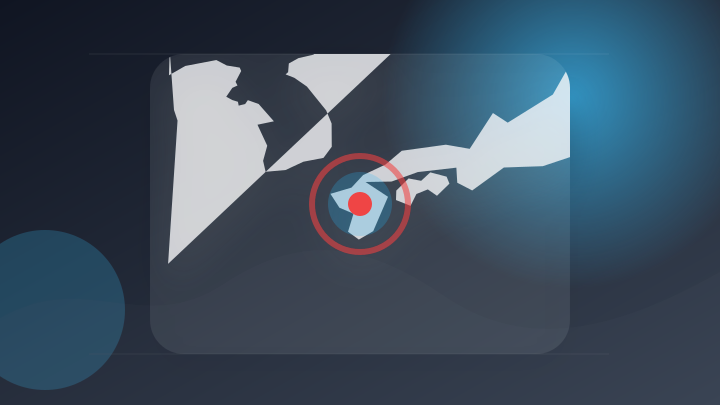
令和8年熊本地震 被災者が使える公的支援まとめ｜中小企業向け融資から個人向け生活再建支援金まで【2026年最新】
注目ポイント注目度 67点
災害
6 topics
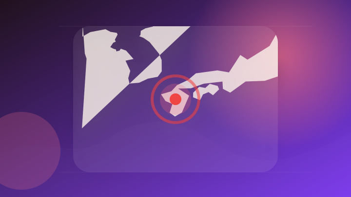
【まとめてわかる】熊本地震 被害状況、イオン、酷暑、震源、寄付は
注目ポイント注目度 70点
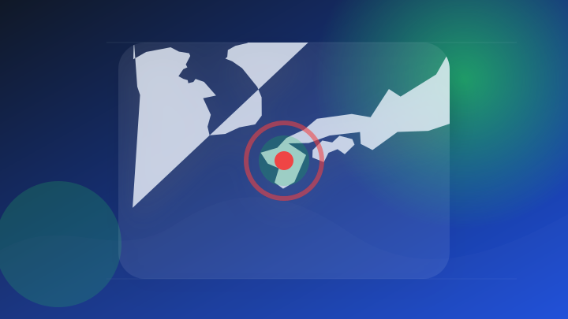
令和8年熊本地震への対応とご寄付のお願い
注目ポイント注目度 67点
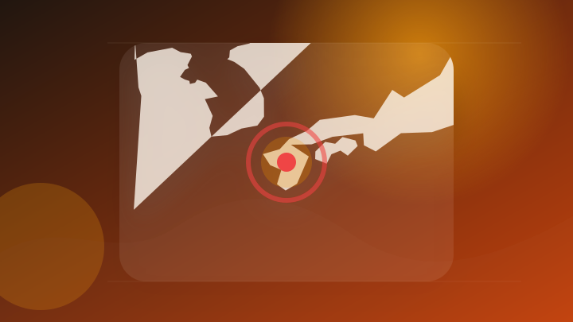
「ボラサポ・令和8年熊本地震」(災害支援金)の寄付受付を開始しました
注目ポイント注目度 67点
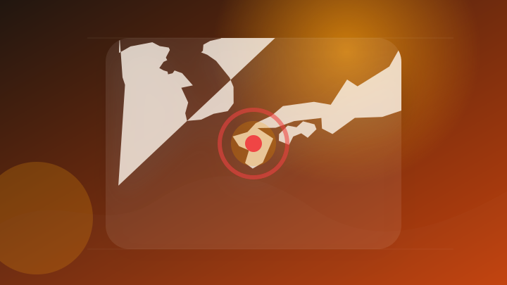
令和8年熊本地震による影響について
注目ポイント注目度 67点
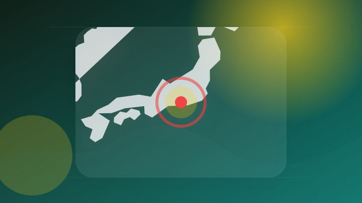
台風13号“猛烈な”勢力へ 来週には日本に接近の可能性 静岡への影響は 【静岡・ただいま天気 7/29】
注目ポイント注目度 67点
非常に強い台風13号(ドルフィン) 明日には猛烈な勢力に発達予想 来週の天気に影響も
注目ポイント注目度 67点
経済
6 topics
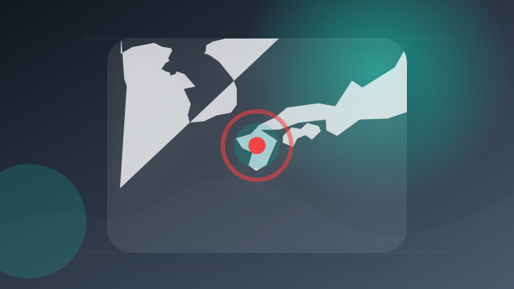
熊本地震で関連株価に影響 東京エレクトロン・日本製紙・地銀など
注目ポイント注目度 70点
任天堂株価が8000円台乗せ メモリー株急落で資金シフト
注目ポイント独立2媒体｜注目度 64点
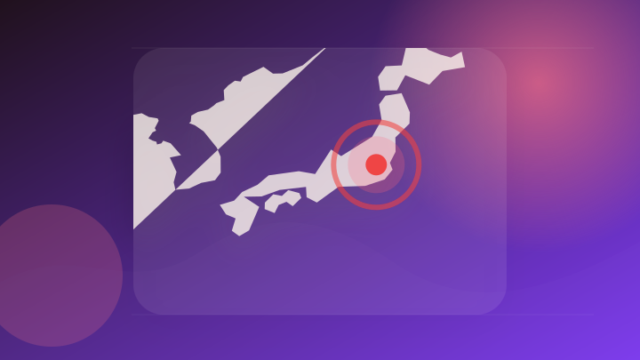
決算:NECの4〜6月純利益2.6倍、国内IT好調 通期見通し上振れ
注目ポイント注目度 64点
決算後に多くの証券会社が目標株価を引き上げた銘柄は
注目ポイント注目度 61点
日経平均は1061円安、内外企業決算やFOMCなどに関心
注目ポイント注目度 61点
広栄化学(株)【4367】：企業情報（決算時期や平均年収、代表者名、IR動画など）
注目ポイント注目度 61点
スポーツ
3 topics
ゲーム
3 topics
宮沢賢治“生誕130年記念” 童話を旅する名作ゲーム復活 「レトロスティック イーハトーヴォ物語」を発売
注目ポイント注目度 64点
【PS Plusフリープレイ】『Big Walk』大自然の謎解き協力ゲームが発売日にフリプ入り。『ダイイングライト2』『SIGNALIS』も8月4日より追加
【PS Plusフリープレイ】『Big Walk』大自然の謎解き協力ゲームが発売日にフリプ入り。『ダイイングライト…
注目ポイント注目度 64点
来週のサービス終了情報まとめ（スマホゲーム・ソシャゲ）【2026年7月27日～8月2日】
注目ポイント注目度 61点